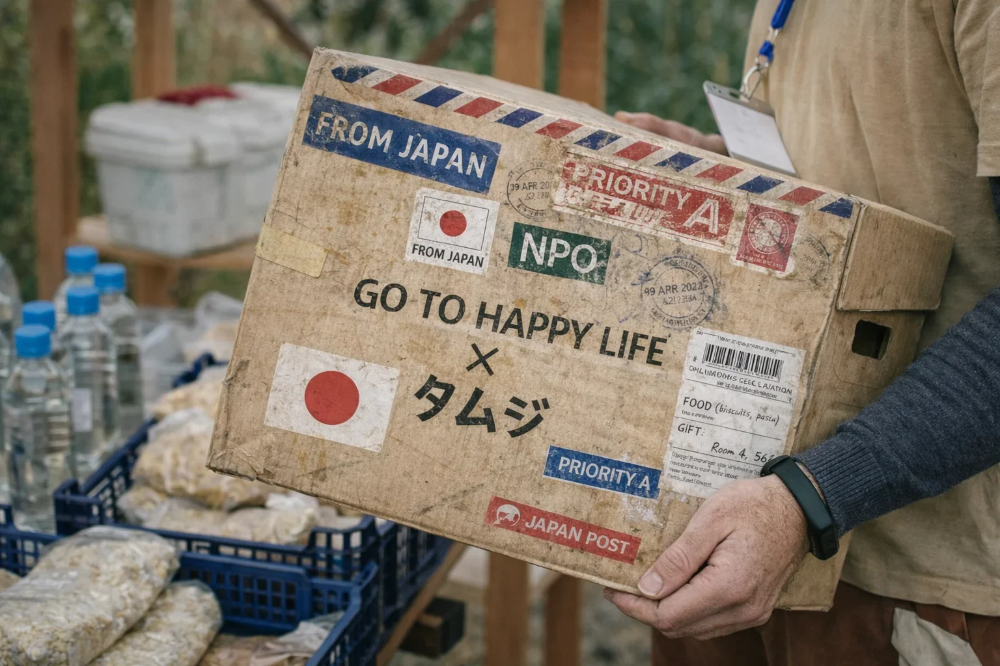
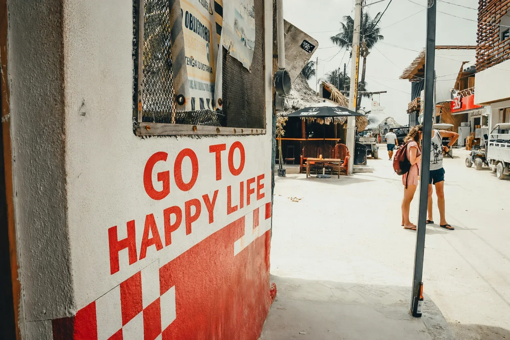
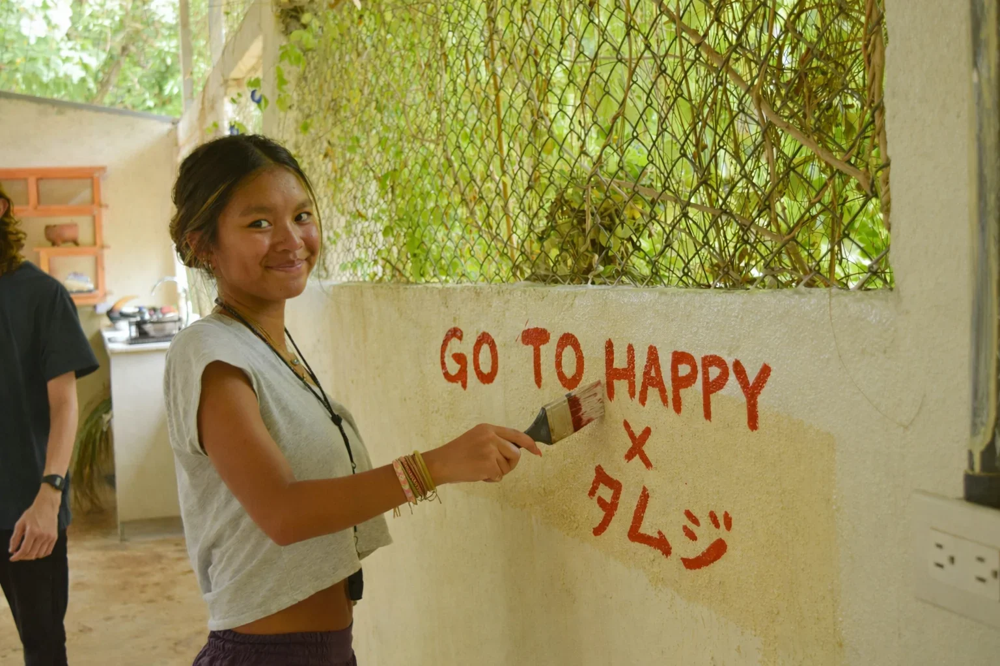
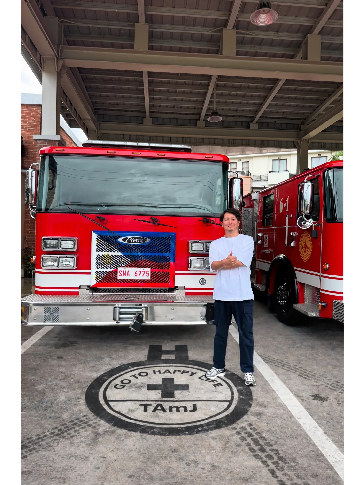

団体概要
- 名称
- 特定非営利活動法人 GO TO HAPPY LIFE
（旧名称：日本在宅看護普及会） - 理事長
- 後藤 栄子
- 設立
- 平成11年（1999年）9月
- 所在地
- 東京都
- 事業内容
- 医療と福祉を軸に、制度の外で困っている人のための活動
問題提起
制度は、すべてを救わない。
医療保険、介護保険、生活保護。日本には多くの社会保障制度がある。
でも、その網の目からこぼれ落ちる人がいる。
私たちは、その現実を知っている。
支援観
支援とは、"してあげる"ことではない。
私たちは、現場に行く。話を聞く。一緒に考える。
答えを持っていくのではなく、答えを一緒に探す。
それが、私たちの支援観だ。
医療×福祉の空白
医療は病院で終わる。福祉は申請から始まる。
その「あいだ」に、誰にも届かない時間がある。
退院したけど、生活が戻らない。制度はあるけど、つながらない。
私たちは、その空白に立つ。

非効率の選択
効率を求めれば、現場には行けない。
私たちは、スケールしない支援を選んでいる。
一人ひとりに向き合う。時間をかける。遠くまで行く。
それは非効率だ。でも、それしかない。
1999年からの変化
設立から25年以上が経った。
社会は変わった。制度も変わった。
でも、制度の外で困っている人は、今もいる。
私たちは、変わらずそこにいる。
目指す位置
私たちは、万能ではない。
すべてを救えるとは思っていない。
でも、目の前の一人を見捨てない。
それが、私たちの立つ位置だ。
活動ギャラリー
これは活動記録ではない。
私たちが、逃げなかった証拠だ。

想いを、国境を越えて届ける。
現地のコミュニティとつながりながら、支援のきっかけを一つひとつ積み重ねています。

命を守る現場と、つながる。
医療や防災の現場とも連携し、支援の幅を広げています。

支援は、特別なことじゃない。
集まり、話し、行動する。その一歩が社会を動かします。

想いは、静かに根づいていく。
目立たなくても、支援は確かに続いています。